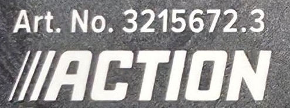

⚠️ At your own risk
Flashing custom firmware can permanently brick the camera and void the warranty. Everything is provided "AS IS", without any warranty. The authors accept no responsibility or liability for any damage or other consequences.
📵 After installing, the original LSC Smart Connect app and the Tuya cloud no longer work with this camera (no app, no cloud recording, no notifications). You can go back at any time – see Restore the original firmware below.
💡 Do not connect a new camera to the LSC app / cloud before installing. It may download a newer firmware over the internet that has not been tested yet – the installer would then refuse it (nothing is written).
1 · Camera
| Model | Action LSC Smart Connect indoor IP camera 1080p, item 3215672 |
| Art. No. (box) | 3215672.3 (tested; .1/.2 probably too; plain 3215672 without suffix is a different camera) |
| SoC | Anyka AK3918AV130 |

❗ The ".3" at the end matters! The "Art. No." on the box must be 3215672.3. The same number without the suffix is a completely different camera inside and is not supported.
2 · Card
- microSD card up to 32 GB, formatted as FAT32 (Windows: right click → Format → FAT32).
- Chrome or Edge on a computer (needs folder access to the card).
3 · Firmware and voices
✅ The camera builds the firmware itself from the backup of its own original firmware – you need nothing else. Only our open-source programs are written to the card.
🔊 Voice prompts are included (English, then Czech, female voice). The camera talks during the whole installation and says what it is doing – you do not need to watch anything on the computer.
Advanced
Own voices and sounds (*.adp from sdkit/voice/make_voice.sh, *.s16 8 kHz mono) – replace the built-in ones with the same name:
Own prebuilt firmware image (.squashfs) instead of building in the camera:
4 · Write the card
Select the root of the card (e.g. E:\). The page downloads the toolkit SD scripts directly from GitHub (tasarren/lsc-tuya-toolkit) and adds the leotech installer, the voice prompts and (optionally) your firmware.
The computer does not see the card? If you use a virtual machine (VirtualBox etc.), disable its USB filter for the card reader, otherwise the VM grabs it.
↩ Restore the original firmware
The installer saves a backup of the original firmware to the card in leo/backup/<MAC>/. Two ways back:
- Camera web page → System → Firmware update → choose
mtdblock7.binfrom the backup. - SD card – choose the backup files and press the button; insert the card into the powered-off camera and switch it on.
Backup files: mtdblock7.bin and md5sums.txt
Details: docs/RESTORE.md. To use the LSC Smart Connect app afterwards, reset the camera the original way and add it again.
5 · In the camera
- Power off, insert the card, power on. After ~30 s the camera speaks (English, then Czech) and announces every step during the whole installation: check, backup, build, write, done.
- New camera: it backs up the original firmware to the card (leo/backup/<MAC>), builds the new firmware (a few minutes), writes it (~30 s) and restarts. Do not unplug the camera meanwhile.
- Unknown camera or version: the camera says so and nothing is written.
- Remove the card and keep the backup from leo/backup on your PC!
- Then connect the camera to Wi-Fi and control it – see 6 · Operation below.
Installer log: logs/leo_autoflash.log on the card.
6 · Operation
Reset button
| short press | the camera says its IP address (English, then Czech); without network it says it is not connected |
| hold 2 s (1 beep) | Wi-Fi by QR code: show the camera your phone's Wi-Fi QR code from 10–30 cm (Android: Wi-Fi → network → Share; iPhone: a "Wi-Fi QR code" app). The blue LED blinks, the camera announces the progress and says its new IP address after connecting. If it cannot connect, it returns to the previous network. Hold 2 s again = cancel. |
| hold 5 s (2 beeps) | clears the camera web password (forgotten password) |
| hold 15 s (ding-ding-ding) | factory settings: image, MQTT and web password back to defaults, the camera restarts. Wi-Fi is kept. |
The camera always says out loud what it did (English, then Czech).
Camera web page
Open http://<camera IP>/ in a browser (the camera says the IP after a short button press). The page is Czech or English according to the browser.
- First visit: choose a password (min. 6 characters), or leave it empty and the page runs without one. You can turn the password on later in the System tab.
-
Image: day/night mode (auto/day/night), IR light (auto/on/off), status LED, flip and mirror, brightness, contrast, saturation, sharpness, snapshot preview and the RTSP stream address
rtsp://<IP>:554/main_ch(Frigate, VLC). - Sound: volume, play and delete the sounds in the camera, upload your own sound (MP3/WAV – converted in the browser), live sound from the microphone or your own stream to TCP port 8093.
- MQTT / Home Assistant: enter the broker (address, port, user, password). The camera appears in Home Assistant automatically (MQTT discovery) with all switches, sliders and a button for every sound.
-
System: camera name (also for Home Assistant), web password, Wi-Fi by QR code, firmware update (a .squashfs file, or
mtdblock7.binfrom the backup to go back to the original), restart and default settings.